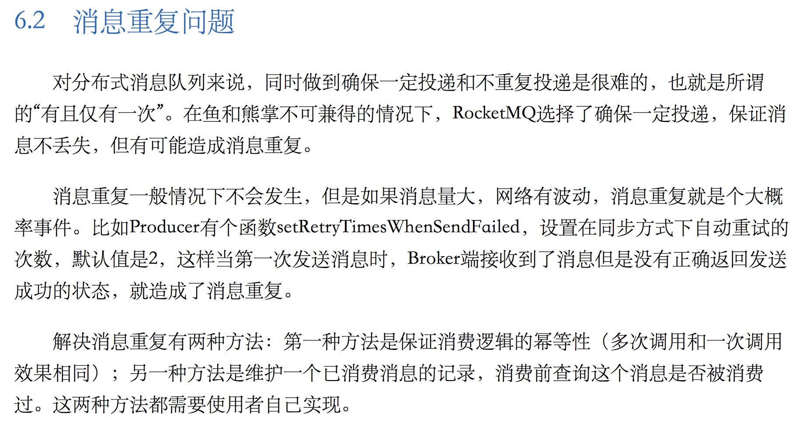

技术栈
- spring boot 作为基础框架
- 阿里云rocketmq作为消息队列，处理延迟，分区，无序消息
- 使用了阿里云消息队列的spring boot库spring-boot-starter-alimq
订单系统在整个系统里的作用
- app: app作为下单入口，在app端生成订单后，通过消息队列传递到订单系统里生成订单
- 推送到店：订单系统生成完成订单后，将把订单发送到门店进行餐品制作，通过http调用推送到店里，店里的收银机等设备根据订单状态打印小票，标签，制作餐品等
- 店里将订单制作完成后，将把订单制作完成的状态回传订单系统
系统核心部分交互流程图

使用订单状态进行幂等处理
由于队列系统本身有设计上的难度，导致队列系统存在消息重复的问题
参考 《RocketMQ实战与原理解析》第6.2节

在测试过程中，多次发现消息重复消费，特别是在进行压测时
所以消息去重必须自行处理，目前处理方式是使用订单状态进行幂等
店里在改变订单状态时把订单改变前的状态和改变后的状态一并传递到订单系统，订单系统在修改状态前校验当前订单状态是否和店里的订单改变前的状态一致，一致才修改订单状态
否者将不进行消费，并认为发生了以下两种情况的一种(业务代码上需要设计成只会出现以下的一种)
- 消息抵达顺序乱序了（使用无序消息和延迟消息会出现这个情况），将重新扔进队列等待消费
- 当成重复消息
- 业务bug处理
特殊情况特殊处理
为了保证订单消息间不会相互影响，订单状态的传递尽可能的使用了无序消息，无序消息最大的特点就是消息抵达无序，但是订单状态的改变是要求有序的。
目前解决方案是同幂等一样，判断订单上次状态和将改变的状态是否一致
spring-boot-starter-alimq源码处理
防止消息无限次的消费，清理消息队列
公司内部进行了修改，但是版权归属公司，为了表达意思，自行进行了下面的修改，演示大致的修改步骤
修改后的源码 spring-boot-starter-alimq
消息超时后丢弃设置
修改MessageEvent: MessageEvent，添加超时字段 timeoutLimit, 这个设计成秒，如果消息消费超过这个时间仍然没有消费成功则直接丢弃，并发送报警，如果此字段无值，则不进行任何操作
/**
* 超时限制
*/
private long timeoutLimit;
修改OrderMessageTemplate 和 RocketMQTemplate 在消息发送时增加timeoutLimit
message.putUserProperties("createdDate", String.valueOf(event.getCreatedDate()));
message.putUserProperties("timeoutLimit", String.valueOf(event.getTimeoutLimit()));
message.putUserProperties("consumeLimit", String.valueOf(event.getConsumeLimit()));
消息达到一定消费次数后丢弃设置
修改MessageEvent: MessageEvent，添加消费次数字段 consumeLimit, 如果消息消费超过这个次数仍然没有消费成功则直接丢弃，并发送报警，如果此字段无值，则不进行任何操作
/**
* 消费次数限制
*/
private Integer consumeLimit;
修改OrderMessageTemplate 和 RocketMQTemplate 在消息发送时增加consumeLimit
同上
接收消息时判断是否超过上面设置的阈值，超过阈值则不处理
核心代码如下：
String consumeLimitProperty = message.getUserProperties("consumeLimit");
String timeoutLimitProperty = message.getUserProperties("consumeLimit");
if (Objects.nonNull(consumeLimitProperty)) {
Integer consumeLimit = Integer.valueOf(consumeLimitProperty);
if (message.getReconsumeTimes() > consumeLimit) {
log.error("消息消费次数超过阈值:[topic: {}, tag: {}, msgId: {}, startDeliverTime: {}]", message.getTopic(), message.getTag(), message.getMsgID(), message.getStartDeliverTime());
return Action.CommitMessage;
}
}
if (Objects.nonNull(timeoutLimitProperty)) {
long timeoutLimit = Long.parseLong(timeoutLimitProperty) * 1000L;
long createdDate = Long.parseLong(message.getUserProperties("createdDate"));
if ((System.currentTimeMillis() - createdDate) > timeoutLimit) {
log.error("消息消费时长超过阈值:[topic: {}, tag: {}, msgId: {}, startDeliverTime: {}]", message.getTopic(), message.getTag(), message.getMsgID(), message.getStartDeliverTime());
return Action.CommitMessage;
}
}
快速定位问题
在订单系统里的关键点添加详细的日志，比如订单状态改变，订单推送到店里等，日志里附加上单号，这样一旦出现异常异常情况，可以通过订单号快速定位到问题
对于一些重要的异常，比如订单状态异常，可以使用log.error进行强调
订单系统特别注意的点
订单系统里金额为了计算精度需要定义为BigDecimal
如果在开发完成后再更改金额的类型，存在漏改错改的风险。
监控报警
队列中的消息堆积量监控比较重要，因为使用了阿里云的rocketmq，目前已开放管控api，可直接调用查看消息堆积量
为了保证订单报警及时推送到人，使用了下面的推送渠道
- 邮件
- 钉钉